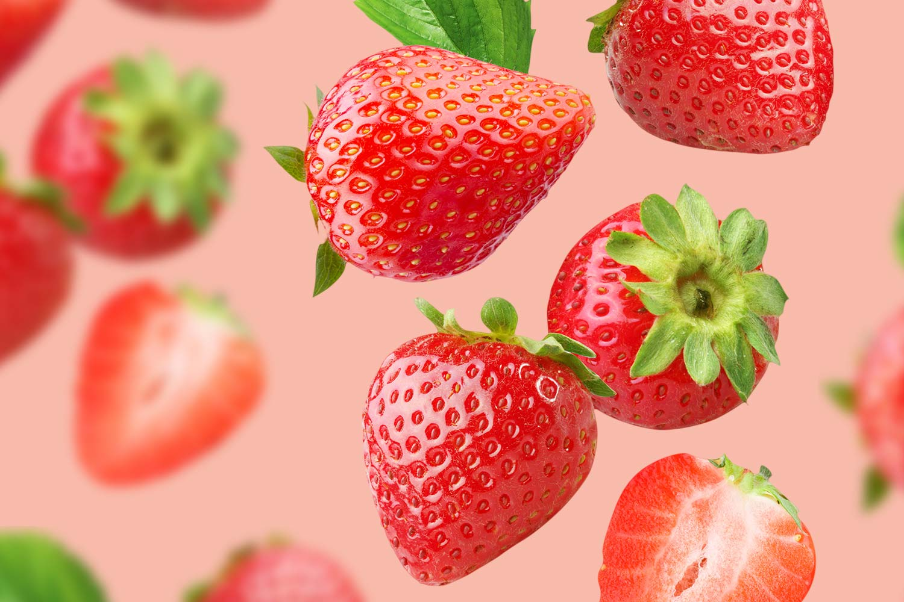

O SITE DAS FRUTAS PREFERIDAS DA LUIZA
MORANGO
Eu particularmente gosto muito de morango, tanto no suco quanto no sorvete, definitivamente meu top 1.

FATOS SOBRE O MORANGO
Morangos eram considerados venenosos na Argentina até meados de 1800.
Morangos são a única fruta com semente do lado de fora.
O morangueiro é uma planta da família das Rosáceas, ou seja, são da mesma família das rosas.
Um morango tem, em média, 200 sementes.
É uma fruta falsa, a parte carnuda que você está comendo é na verdade o caule da planta.